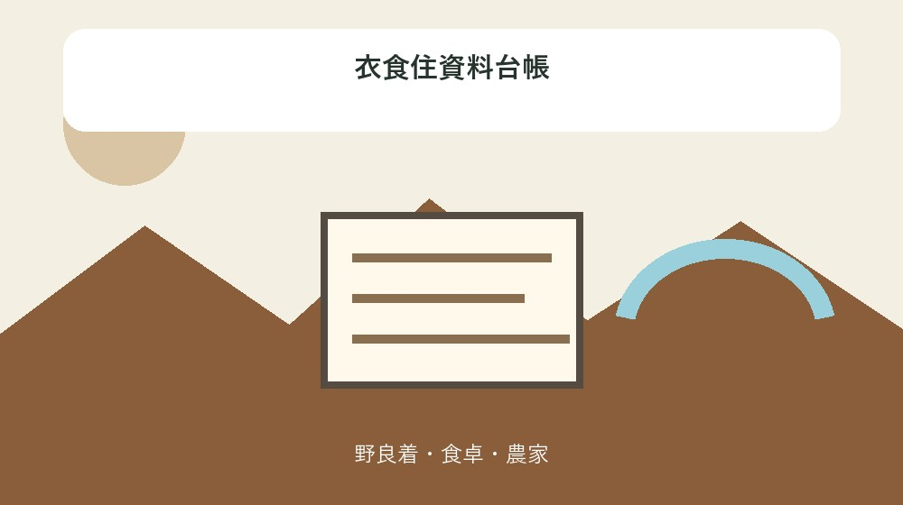
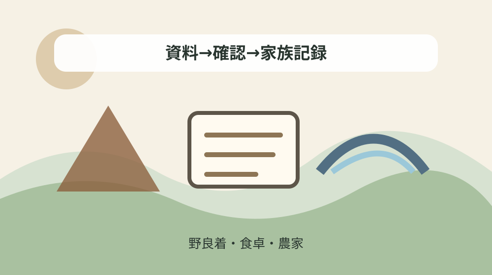

森町の衣食住資料を用途・季節・場所で整理する生活資料台帳

結論：衣類、食事、屋敷、道具、季節、行事、写真時点を混ぜずに一資料一行で残すと、公式資料の記載と現在の状態を混同しない衣食住資料台帳になります。
衣食住資料台帳を作る目的
この記事の成果物は「衣食住資料台帳」です。森町の衣食住資料を用途・季節・場所で整理する生活資料台帳という問いに対し、観光地の一覧や物語の要約ではなく、衣類、食事、屋敷、道具、季節、行事、写真時点を混ぜずに一資料一行で残すための記録を作ります。公式ページに載る名称だけを拾わず、何を根拠に、いつ確認したかまで一行に残します。 この段階では「昭和十年代までは季節に応じて単衣や綿入れを使い分けた」と「日が長い季節には一日四回の食事をとった」の関係を照合し、衣食住資料台帳の根拠欄へ確認日とともに残します。森町の衣食住資料を用途・季節・場所で整理する生活資料台帳という目的から外れる説明は別紙へ分けます。
既存の森町総合案内は、町の魅力や歴史の入口を広く示します。本稿はそこから一段深く、家族や地域で資料を読み直すときの確認単位を固定します。対象を見に行けるか、現在も同じ状態かは、掲載事実とは別の欄に置きます。 読み合わせでは「傷んだ衣類には当て布をして長く使った」の記載へ戻り、「麦飯、そば、うどん、くず米の餅などが食べられた」と対象や年代を混同していないか確かめます。野良着・食卓・農家を扱う本稿では、衣類、食事、屋敷、道具、季節、行事、写真時点を混ぜずに一資料一行で残す順番を崩しません。
最初に記入するのは資料名、公式ページ、確認日、対象名称です。次に年代、場所、数量、材質や地形など記事固有の欄を足します。分からない項目は空欄にせず「公式資料では未確認」と書き、推定を確定情報に見せません。 家族用の控えには「男性の農作業着には紺襦袢と股引が挙げられる」と「農家の屋敷は防風の植栽で囲まれた」を参照した行を示し、衣食住資料台帳の未確認欄を推測で埋めません。確認後も「森町の衣食住資料を用途・季節・場所で整理する生活資料台帳」の範囲だけを更新します。
この整理は売却や観光を急がせるものではありません。手元の写真、家族の記憶、町公式の説明を別の証拠として保存し、後から文化振興係や資料館へ具体的に尋ねられる状態を整えることが目的です。 更新時は「女性の農作業着には野良着、手甲、脚絆が挙げられる」と「母屋の西北に蔵と地の神を置く例が説明される」の出典を再確認し、衣食住資料台帳の旧行を消さず新しい確認結果を追記します。野良着・食卓・農家の現況は、衣類、食事、屋敷、道具、季節、行事、写真時点を混ぜずに一資料一行で残す資料記載とは別欄です。
一次資料の確認単位を分ける
町公式資料では「昭和十年代までは季節に応じて単衣や綿入れを使い分けた」と確認できます。この一文から対象名と数値だけを抜き出すのではなく、ページ更新日、説明の主語、資料写真の時点を併記します。更新日が現在の現況確認日を意味するとは限りません。 読み合わせでは「戦時期からモンペが用いられた」の記載へ戻り、「昭和十年代までは季節に応じて単衣や綿入れを使い分けた」と対象や年代を混同していないか確かめます。野良着・食卓・農家を扱う本稿では、衣類、食事、屋敷、道具、季節、行事、写真時点を混ぜずに一資料一行で残す順番を崩しません。
別の確認事項として「傷んだ衣類には当て布をして長く使った」があります。似た対象でも、指定区分、時代、場所、資料の種類が違えば別レコードにします。一つの総称へまとめると、後から典拠へ戻る手掛かりが消えてしまいます。 家族用の控えには「日が長い季節には一日四回の食事をとった」と「傷んだ衣類には当て布をして長く使った」を参照した行を示し、衣食住資料台帳の未確認欄を推測で埋めません。確認後も「森町の衣食住資料を用途・季節・場所で整理する生活資料台帳」の範囲だけを更新します。
さらに「男性の農作業着には紺襦袢と股引が挙げられる」という具体情報を記録します。年代が伝承、推定、銘文、表、写真説明のどれに基づくかを原文の動詞とともに残し、単独の西暦へ単純化しません。 更新時は「麦飯、そば、うどん、くず米の餅などが食べられた」と「男性の農作業着には紺襦袢と股引が挙げられる」の出典を再確認し、衣食住資料台帳の旧行を消さず新しい確認結果を追記します。野良着・食卓・農家の現況は、衣類、食事、屋敷、道具、季節、行事、写真時点を混ぜずに一資料一行で残す資料記載とは別欄です。
二つ目の森町公式資料は、隣接する時代や自然環境を照合するために使います。同じ説明の転載先を二本数えるのではなく、主資料で対象、補助資料で地域背景や前後関係を確かめます。 この段階では「農家の屋敷は防風の植栽で囲まれた」と「女性の農作業着には野良着、手甲、脚絆が挙げられる」の関係を照合し、衣食住資料台帳の根拠欄へ確認日とともに残します。森町の衣食住資料を用途・季節・場所で整理する生活資料台帳という目的から外れる説明は別紙へ分けます。
名称・年代・場所を一行へ結ぶ
台帳の基礎行には「女性の農作業着には野良着、手甲、脚絆が挙げられる」を置きます。ただし出来事の年、資料が作られた年、写真撮影年、ウェブ更新年は別物です。四つの日付欄を設け、分からない日付を別の日付で代用しません。 家族用の控えには「母屋の西北に蔵と地の神を置く例が説明される」と「農家の屋敷は防風の植栽で囲まれた」を参照した行を示し、衣食住資料台帳の未確認欄を推測で埋めません。確認後も「森町の衣食住資料を用途・季節・場所で整理する生活資料台帳」の範囲だけを更新します。
場所欄には「戦時期からモンペが用いられた」に関係する公式表記を使います。公開資料より細かな私有地位置を推測せず、地区名、施設名、遺跡名など公式に示された粒度までにとどめます。 更新時は「屋敷南側の広場は農作業に使われた」と「母屋の西北に蔵と地の神を置く例が説明される」の出典を再確認し、衣食住資料台帳の旧行を消さず新しい確認結果を追記します。野良着・食卓・農家の現況は、衣類、食事、屋敷、道具、季節、行事、写真時点を混ぜずに一資料一行で残す資料記載とは別欄です。
数量や寸法については「日が長い季節には一日四回の食事をとった」を記録できます。単位、概数か確定値か、母数が何かを同じセルへ残します。数字だけが家族へ引き継がれると、別の対象の値へ置き換わりやすいためです。 この段階では「婚礼打掛けには大正二年使用の記録がある」と「屋敷南側の広場は農作業に使われた」の関係を照合し、衣食住資料台帳の根拠欄へ確認日とともに残します。森町の衣食住資料を用途・季節・場所で整理する生活資料台帳という目的から外れる説明は別紙へ分けます。
地図を付ける場合も、公開地点の案内図と研究上の推定位置を同じ記号にしません。公式地点、地区中心、位置未確認の三記号を使い、現地立入りや見学の可否は地図とは別の確認欄にします。 読み合わせでは「味噌部屋は漬物や味噌の保管場所だった」の記載へ戻り、「婚礼打掛けには大正二年使用の記録がある」と対象や年代を混同していないか確かめます。野良着・食卓・農家を扱う本稿では、衣類、食事、屋敷、道具、季節、行事、写真時点を混ぜずに一資料一行で残す順番を崩しません。
資料写真と現況を混同しない
公式ページには「麦飯、そば、うどん、くず米の餅などが食べられた」という説明があります。資料写真があっても、撮影対象が現在も同じ状態か、常時公開されているか、撮影できるかまでは自動的に分かりません。掲載確認と現況確認を分離します。 更新時は「昭和十年代までは季節に応じて単衣や綿入れを使い分けた」と「男性の農作業着には紺襦袢と股引が挙げられる」の出典を再確認し、衣食住資料台帳の旧行を消さず新しい確認結果を追記します。野良着・食卓・農家の現況は、衣類、食事、屋敷、道具、季節、行事、写真時点を混ぜずに一資料一行で残す資料記載とは別欄です。
次の根拠は「農家の屋敷は防風の植栽で囲まれた」です。物の欠損、場所の変化、呼称の変更が示される場合は、古い状態を消さず、確認時点ごとに行を追加します。最新版だけを残すより変化の経路を追いやすくなります。 この段階では「傷んだ衣類には当て布をして長く使った」と「女性の農作業着には野良着、手甲、脚絆が挙げられる」の関係を照合し、衣食住資料台帳の根拠欄へ確認日とともに残します。森町の衣食住資料を用途・季節・場所で整理する生活資料台帳という目的から外れる説明は別紙へ分けます。
家族写真や聞き取りを加えるときは、公式資料の欄へ上書きしません。話者、聞取日、写真の所蔵者、写っている対象の推定、確信度を独立させ、町公式で確認済みの事実と見た目をそろえます。 読み合わせでは「男性の農作業着には紺襦袢と股引が挙げられる」の記載へ戻り、「戦時期からモンペが用いられた」と対象や年代を混同していないか確かめます。野良着・食卓・農家を扱う本稿では、衣類、食事、屋敷、道具、季節、行事、写真時点を混ぜずに一資料一行で残す順番を崩しません。
現地確認は公道や公開施設から安全にできる範囲に限ります。個人宅、社寺の非公開区画、遺跡、山林、河川内へ無断で入らず、公開案内がない対象は「公開未確認」として文化振興係などの公式窓口を入口にします。 家族用の控えには「女性の農作業着には野良着、手甲、脚絆が挙げられる」と「日が長い季節には一日四回の食事をとった」を参照した行を示し、衣食住資料台帳の未確認欄を推測で埋めません。確認後も「森町の衣食住資料を用途・季節・場所で整理する生活資料台帳」の範囲だけを更新します。
良い点
衣食住資料台帳の良い点は、資料の名称と根拠を一緒に残せることです。「母屋の西北に蔵と地の神を置く例が説明される」のような固有情報を、単なる豆知識ではなく次回確認できる検索キーとして保存できます。 この段階では「戦時期からモンペが用いられた」と「屋敷南側の広場は農作業に使われた」の関係を照合し、衣食住資料台帳の根拠欄へ確認日とともに残します。森町の衣食住資料を用途・季節・場所で整理する生活資料台帳という目的から外れる説明は別紙へ分けます。
二つ目の利点は、年代の異なる資料を無理に一本化しないことです。古い写真、公式解説、現在の案内を三層に分ければ、変化を誤りと決め付けず、いつ何が確認できたかを家族で共有できます。 読み合わせでは「日が長い季節には一日四回の食事をとった」の記載へ戻り、「婚礼打掛けには大正二年使用の記録がある」と対象や年代を混同していないか確かめます。野良着・食卓・農家を扱う本稿では、衣類、食事、屋敷、道具、季節、行事、写真時点を混ぜずに一資料一行で残す順番を崩しません。
三つ目は、地域の価値を見学者数だけで測らずに済むことです。非公開の資料や個人所蔵品も、所在や権利に配慮しながら名称・典拠を記録でき、無断訪問や無断転載を避けた保存につながります。 家族用の控えには「麦飯、そば、うどん、くず米の餅などが食べられた」と「味噌部屋は漬物や味噌の保管場所だった」を参照した行を示し、衣食住資料台帳の未確認欄を推測で埋めません。確認後も「森町の衣食住資料を用途・季節・場所で整理する生活資料台帳」の範囲だけを更新します。
四つ目は、森町公式の複数ページを役割別に使えることです。主題ページで具体事実を確認し、関連ページで地形、時代、暮らしとの関係を確認することで、一ページの説明を過度に拡張しません。 更新時は「農家の屋敷は防風の植栽で囲まれた」と「昭和十年代までは季節に応じて単衣や綿入れを使い分けた」の出典を再確認し、衣食住資料台帳の旧行を消さず新しい確認結果を追記します。野良着・食卓・農家の現況は、衣類、食事、屋敷、道具、季節、行事、写真時点を混ぜずに一資料一行で残す資料記載とは別欄です。
注文したい点
注文したい点は、公式ページの更新日と資料の調査時点が一致しない場合があることです。「屋敷南側の広場は農作業に使われた」も、記録された時点の説明として読み、現在の状態を確認したい場合は別の日付と確認先を加えます。 読み合わせでは「母屋の西北に蔵と地の神を置く例が説明される」の記載へ戻り、「戦時期からモンペが用いられた」と対象や年代を混同していないか確かめます。野良着・食卓・農家を扱う本稿では、衣類、食事、屋敷、道具、季節、行事、写真時点を混ぜずに一資料一行で残す順番を崩しません。
写真の説明に個人所蔵や個人提供とある場合、ウェブ掲載を自由利用の許可と読み替えません。画像を複製せず、必要なときは利用条件と権利者を確認し、本稿の挿絵は原資料を再現しない独自図にします。 家族用の控えには「屋敷南側の広場は農作業に使われた」と「日が長い季節には一日四回の食事をとった」を参照した行を示し、衣食住資料台帳の未確認欄を推測で埋めません。確認後も「森町の衣食住資料を用途・季節・場所で整理する生活資料台帳」の範囲だけを更新します。
名称の揺れにも注意が必要です。旧村名、字名、通称、寺社名、遺跡名を検索用に並べても、現在住所へ断定的に置換しません。原表記、現在候補、照合資料、確度を別欄に残します。 更新時は「婚礼打掛けには大正二年使用の記録がある」と「麦飯、そば、うどん、くず米の餅などが食べられた」の出典を再確認し、衣食住資料台帳の旧行を消さず新しい確認結果を追記します。野良着・食卓・農家の現況は、衣類、食事、屋敷、道具、季節、行事、写真時点を混ぜずに一資料一行で残す資料記載とは別欄です。
公開ページだけでは欠ける項目があります。その不足を想像で埋めず、質問欄へ移します。対象、知りたい項目、参照したURL、確認日をまとめてから問い合わせれば、漠然とした質問より確認しやすくなります。 この段階では「味噌部屋は漬物や味噌の保管場所だった」と「農家の屋敷は防風の植栽で囲まれた」の関係を照合し、衣食住資料台帳の根拠欄へ確認日とともに残します。森町の衣食住資料を用途・季節・場所で整理する生活資料台帳という目的から外れる説明は別紙へ分けます。
食い違いを更新履歴として残す
「婚礼打掛けには大正二年使用の記録がある」という記載と別資料の説明が異なるときは、どちらかを即座に削除しません。資料名、公開・刊行時点、対象範囲を確認し、同じ物を述べているかを先に切り分けます。 家族用の控えには「昭和十年代までは季節に応じて単衣や綿入れを使い分けた」と「味噌部屋は漬物や味噌の保管場所だった」を参照した行を示し、衣食住資料台帳の未確認欄を推測で埋めません。確認後も「森町の衣食住資料を用途・季節・場所で整理する生活資料台帳」の範囲だけを更新します。
数値の差は誤植だけでなく、母数、地区範囲、調査年、分類方法の違いでも生じます。台帳では値の横に単位と資料名を残し、比較できない値を増減として計算しません。 更新時は「傷んだ衣類には当て布をして長く使った」と「昭和十年代までは季節に応じて単衣や綿入れを使い分けた」の出典を再確認し、衣食住資料台帳の旧行を消さず新しい確認結果を追記します。野良着・食卓・農家の現況は、衣類、食事、屋敷、道具、季節、行事、写真時点を混ぜずに一資料一行で残す資料記載とは別欄です。
年代の差は、制作、奉納、再建、修理、発見、指定、撮影という出来事の違いかもしれません。出来事種別を付けることで、一対象に複数の正しい年代が共存できる形にします。 この段階では「男性の農作業着には紺襦袢と股引が挙げられる」と「傷んだ衣類には当て布をして長く使った」の関係を照合し、衣食住資料台帳の根拠欄へ確認日とともに残します。森町の衣食住資料を用途・季節・場所で整理する生活資料台帳という目的から外れる説明は別紙へ分けます。
更新するときは旧行を残し、新しい確認行に日付を付けます。家族が後から見たとき、何が変わったのか、以前の判断がどの資料に基づいていたのかを追えることが重要です。 読み合わせでは「女性の農作業着には野良着、手甲、脚絆が挙げられる」の記載へ戻り、「男性の農作業着には紺襦袢と股引が挙げられる」と対象や年代を混同していないか確かめます。野良着・食卓・農家を扱う本稿では、衣類、食事、屋敷、道具、季節、行事、写真時点を混ぜずに一資料一行で残す順番を崩しません。

家族へ渡す記録を整える
家族版には、資料番号、対象名、地区、公式URL、確認日、根拠の短い要約、未確認項目を置きます。衣類、食事、屋敷、道具、季節、行事、写真時点を混ぜずに一資料一行で残すという記事の目的が、表の列だけを見ても分かるようにします。 更新時は「戦時期からモンペが用いられた」と「麦飯、そば、うどん、くず米の餅などが食べられた」の出典を再確認し、衣食住資料台帳の旧行を消さず新しい確認結果を追記します。野良着・食卓・農家の現況は、衣類、食事、屋敷、道具、季節、行事、写真時点を混ぜずに一資料一行で残す資料記載とは別欄です。
問い合わせ記録には、担当部署、連絡日、尋ねた内容、回答の要点、再確認時期を残します。担当者個人名を公開版へ載せず、公式部署と代表的な連絡先を中心にします。 この段階では「日が長い季節には一日四回の食事をとった」と「農家の屋敷は防風の植栽で囲まれた」の関係を照合し、衣食住資料台帳の根拠欄へ確認日とともに残します。森町の衣食住資料を用途・季節・場所で整理する生活資料台帳という目的から外れる説明は別紙へ分けます。
写真を保存する場合は、元画像を加工せず保管し、公開用は位置情報や人物情報を見直します。文化資料を残す目的でも、生活の場や個人を特定する情報まで広く公開する必要はありません。 読み合わせでは「麦飯、そば、うどん、くず米の餅などが食べられた」の記載へ戻り、「母屋の西北に蔵と地の神を置く例が説明される」と対象や年代を混同していないか確かめます。野良着・食卓・農家を扱う本稿では、衣類、食事、屋敷、道具、季節、行事、写真時点を混ぜずに一資料一行で残す順番を崩しません。
売却や相続が未定でも、この記録は役立ちます。家や土地に関係する資料であれば、登記、境界、建物安全性の判断資料とは別フォルダに置き、文化的説明が法的証明へ変わらないようにします。 家族用の控えには「農家の屋敷は防風の植栽で囲まれた」と「屋敷南側の広場は農作業に使われた」を参照した行を示し、衣食住資料台帳の未確認欄を推測で埋めません。確認後も「森町の衣食住資料を用途・季節・場所で整理する生活資料台帳」の範囲だけを更新します。
対案・結論
結論は、最初から完全な一覧を作らず、公式資料で確認できる十二件を十二行にすることです。衣食住資料台帳に対象名と根拠を転記し、不明欄を見える状態にしてから追加調査へ進みます。 この段階では「母屋の西北に蔵と地の神を置く例が説明される」と「傷んだ衣類には当て布をして長く使った」の関係を照合し、衣食住資料台帳の根拠欄へ確認日とともに残します。森町の衣食住資料を用途・季節・場所で整理する生活資料台帳という目的から外れる説明は別紙へ分けます。
今日の一歩は「味噌部屋は漬物や味噌の保管場所だった」を含む公式ページを保存し、確認日を書くことです。ページの全文転載ではなく、対象名、数値、年代、問い合わせ先など再確認に必要な項目を自分の言葉で要約します。 読み合わせでは「屋敷南側の広場は農作業に使われた」の記載へ戻り、「男性の農作業着には紺襦袢と股引が挙げられる」と対象や年代を混同していないか確かめます。野良着・食卓・農家を扱う本稿では、衣類、食事、屋敷、道具、季節、行事、写真時点を混ぜずに一資料一行で残す順番を崩しません。
次に関連する森町公式ページを開き、同じ対象が別の切り口で説明されているか確認します。見つからなくても、存在しないと断定せず「関連記載未確認」として検索語と確認範囲を残します。 家族用の控えには「婚礼打掛けには大正二年使用の記録がある」と「女性の農作業着には野良着、手甲、脚絆が挙げられる」を参照した行を示し、衣食住資料台帳の未確認欄を推測で埋めません。確認後も「森町の衣食住資料を用途・季節・場所で整理する生活資料台帳」の範囲だけを更新します。
最後に公開可否を確認します。場所が分かることと立ち入れること、資料名が分かることと画像を転載できることは別です。この二つを守れば、調査の精度と地域への配慮を両立できます。 更新時は「味噌部屋は漬物や味噌の保管場所だった」と「戦時期からモンペが用いられた」の出典を再確認し、衣食住資料台帳の旧行を消さず新しい確認結果を追記します。野良着・食卓・農家の現況は、衣類、食事、屋敷、道具、季節、行事、写真時点を混ぜずに一資料一行で残す資料記載とは別欄です。
大石の視点
私は不動産の相談でも、古い資料をすぐ価格へ結び付けません。衣食住資料台帳で資料の意味を確かめ、道路、境界、建物、登記など現行の確認事項は別の資料で調べます。文化的価値と取引条件は重なる部分があっても同一ではありません。 読み合わせでは「昭和十年代までは季節に応じて単衣や綿入れを使い分けた」の記載へ戻り、「母屋の西北に蔵と地の神を置く例が説明される」と対象や年代を混同していないか確かめます。野良着・食卓・農家を扱う本稿では、衣類、食事、屋敷、道具、季節、行事、写真時点を混ぜずに一資料一行で残す順番を崩しません。
小さな不動産業者だからこそ、所有者がまだ売ると決めていない段階の整理を大切にします。写真や文書の所在を家族で共有するだけでも、片付けの途中で捨てる危険を減らし、専門機関へ相談する準備になります。 家族用の控えには「傷んだ衣類には当て布をして長く使った」と「屋敷南側の広場は農作業に使われた」を参照した行を示し、衣食住資料台帳の未確認欄を推測で埋めません。確認後も「森町の衣食住資料を用途・季節・場所で整理する生活資料台帳」の範囲だけを更新します。
現地で見える形だけから年代や由来を断定しません。公的資料、家族資料、現況を三列に分け、食い違いは未確認として残します。分からないと記録することは調査の失敗ではなく、次の確認先を明確にする作業です。 更新時は「男性の農作業着には紺襦袢と股引が挙げられる」と「婚礼打掛けには大正二年使用の記録がある」の出典を再確認し、衣食住資料台帳の旧行を消さず新しい確認結果を追記します。野良着・食卓・農家の現況は、衣類、食事、屋敷、道具、季節、行事、写真時点を混ぜずに一資料一行で残す資料記載とは別欄です。
地域の歴史を尊重するとは、何でも公開することではありません。個人所蔵、信仰の場、生息地、遺跡など対象ごとの静穏と保護条件を守りながら、典拠と確認日を次の世代へ渡すことだと考えます。 この段階では「女性の農作業着には野良着、手甲、脚絆が挙げられる」と「味噌部屋は漬物や味噌の保管場所だった」の関係を照合し、衣食住資料台帳の根拠欄へ確認日とともに残します。森町の衣食住資料を用途・季節・場所で整理する生活資料台帳という目的から外れる説明は別紙へ分けます。
公式事実を十二項目で点検する
点検一から三は「昭和十年代までは季節に応じて単衣や綿入れを使い分けた」「傷んだ衣類には当て布をして長く使った」「男性の農作業着には紺襦袢と股引が挙げられる」です。三項目を同じ文章へ押し込まず、各行に資料名と確認日を付けます。 家族用の控えには「戦時期からモンペが用いられた」と「女性の農作業着には野良着、手甲、脚絆が挙げられる」を参照した行を示し、衣食住資料台帳の未確認欄を推測で埋めません。確認後も「森町の衣食住資料を用途・季節・場所で整理する生活資料台帳」の範囲だけを更新します。
点検四から六は「女性の農作業着には野良着、手甲、脚絆が挙げられる」「戦時期からモンペが用いられた」「日が長い季節には一日四回の食事をとった」です。年代、場所、数量のどれに当たるか分類し、単位や推定表現を落としません。 更新時は「日が長い季節には一日四回の食事をとった」と「戦時期からモンペが用いられた」の出典を再確認し、衣食住資料台帳の旧行を消さず新しい確認結果を追記します。野良着・食卓・農家の現況は、衣類、食事、屋敷、道具、季節、行事、写真時点を混ぜずに一資料一行で残す資料記載とは別欄です。
点検七から九は「麦飯、そば、うどん、くず米の餅などが食べられた」「農家の屋敷は防風の植栽で囲まれた」「母屋の西北に蔵と地の神を置く例が説明される」です。対象の状態や資料時点が違う場合は、親レコードと出来事レコードを分けます。 この段階では「麦飯、そば、うどん、くず米の餅などが食べられた」と「日が長い季節には一日四回の食事をとった」の関係を照合し、衣食住資料台帳の根拠欄へ確認日とともに残します。森町の衣食住資料を用途・季節・場所で整理する生活資料台帳という目的から外れる説明は別紙へ分けます。
点検十から十二は「屋敷南側の広場は農作業に使われた」「婚礼打掛けには大正二年使用の記録がある」「味噌部屋は漬物や味噌の保管場所だった」です。現況や公開条件が本文にない場合、その不足も台帳の情報として残します。 読み合わせでは「農家の屋敷は防風の植栽で囲まれた」の記載へ戻り、「麦飯、そば、うどん、くず米の餅などが食べられた」と対象や年代を混同していないか確かめます。野良着・食卓・農家を扱う本稿では、衣類、食事、屋敷、道具、季節、行事、写真時点を混ぜずに一資料一行で残す順番を崩しません。
衣食住資料台帳を読み合わせる手順
読み合わせは一人が説明し、別の人が公式ページを開く形にします。最初の人は「昭和十年代までは季節に応じて単衣や綿入れを使い分けた」と「戦時期からモンペが用いられた」を台帳から読み、もう一人は対象名、数字、場所の表記が公式本文と一致するかを確認します。記憶だけで合っていると判断しません。 更新時は「母屋の西北に蔵と地の神を置く例が説明される」と「婚礼打掛けには大正二年使用の記録がある」の出典を再確認し、衣食住資料台帳の旧行を消さず新しい確認結果を追記します。野良着・食卓・農家の現況は、衣類、食事、屋敷、道具、季節、行事、写真時点を混ぜずに一資料一行で残す資料記載とは別欄です。
次に年代の種類を確認します。「女性の農作業着には野良着、手甲、脚絆が挙げられる」と「屋敷南側の広場は農作業に使われた」が同じ対象に関係していても、制作、発見、使用、指定、撮影など出来事が違えば別の年です。年表へ置く前に動詞を残し、出来事が不明な年代は保留します。 この段階では「屋敷南側の広場は農作業に使われた」と「味噌部屋は漬物や味噌の保管場所だった」の関係を照合し、衣食住資料台帳の根拠欄へ確認日とともに残します。森町の衣食住資料を用途・季節・場所で整理する生活資料台帳という目的から外れる説明は別紙へ分けます。
三番目に所在と公開条件を確認します。「農家の屋敷は防風の植栽で囲まれた」に所蔵や場所が示されても、現在の見学、撮影、転載が認められたとは限りません。公開案内のURLと確認日がない場合は、場所欄を埋めても公開欄は未確認のままにします。 読み合わせでは「婚礼打掛けには大正二年使用の記録がある」の記載へ戻り、「昭和十年代までは季節に応じて単衣や綿入れを使い分けた」と対象や年代を混同していないか確かめます。野良着・食卓・農家を扱う本稿では、衣類、食事、屋敷、道具、季節、行事、写真時点を混ぜずに一資料一行で残す順番を崩しません。
最後に未確認項目だけを質問票へ移します。衣食住資料台帳の全欄を一度に問い合わせず、対象名、参照ページ、確認した事実、知りたい一点をまとめます。回答後は旧記録を消さず、回答日と確認先を付けた新しい行として追加します。 家族用の控えには「味噌部屋は漬物や味噌の保管場所だった」と「傷んだ衣類には当て布をして長く使った」を参照した行を示し、衣食住資料台帳の未確認欄を推測で埋めません。確認後も「森町の衣食住資料を用途・季節・場所で整理する生活資料台帳」の範囲だけを更新します。
まとめ
森町の衣食住資料を用途・季節・場所で整理する生活資料台帳には、名称を集めるだけでは足りません。衣類、食事、屋敷、道具、季節、行事、写真時点を混ぜずに一資料一行で残すことで、公式資料へ戻れる衣食住資料台帳になります。 この段階では「昭和十年代までは季節に応じて単衣や綿入れを使い分けた」と「日が長い季節には一日四回の食事をとった」の関係を照合し、衣食住資料台帳の根拠欄へ確認日とともに残します。森町の衣食住資料を用途・季節・場所で整理する生活資料台帳という目的から外れる説明は別紙へ分けます。
重要なのは、資料の記載、現在の状態、家族の記憶を混ぜないことです。三つを別の列に置けば、後から訂正や追加があっても、以前の根拠を失わず更新できます。 読み合わせでは「傷んだ衣類には当て布をして長く使った」の記載へ戻り、「麦飯、そば、うどん、くず米の餅などが食べられた」と対象や年代を混同していないか確かめます。野良着・食卓・農家を扱う本稿では、衣類、食事、屋敷、道具、季節、行事、写真時点を混ぜずに一資料一行で残す順番を崩しません。
また、所在地や所蔵先が分かっても、見学・撮影・転載が可能とは限りません。公開未確認を正直に残し、必要なときだけ公式窓口へ目的と対象を示して確認します。 家族用の控えには「男性の農作業着には紺襦袢と股引が挙げられる」と「農家の屋敷は防風の植栽で囲まれた」を参照した行を示し、衣食住資料台帳の未確認欄を推測で埋めません。確認後も「森町の衣食住資料を用途・季節・場所で整理する生活資料台帳」の範囲だけを更新します。
まず十二行の表を作り、確認日を記入してください。森町の資料を暮らしの記録として守る作業は、現地へ急ぐことではなく、典拠を分けて残すところから始まります。 更新時は「女性の農作業着には野良着、手甲、脚絆が挙げられる」と「母屋の西北に蔵と地の神を置く例が説明される」の出典を再確認し、衣食住資料台帳の旧行を消さず新しい確認結果を追記します。野良着・食卓・農家の現況は、衣類、食事、屋敷、道具、季節、行事、写真時点を混ぜずに一資料一行で残す資料記載とは別欄です。
よくある質問
衣食住資料台帳で最初に書く項目は何ですか。
公式ページ名、対象名、確認日、根拠の種類です。現況や公開条件は別欄にし、資料掲載から推定しません。
公式ページの写真があれば現地を見学できますか。
できるとは限りません。公開案内を別に確認し、個人宅、社寺、遺跡、生息地へ無断で立ち入りません。
家族の記憶は公式事実と同じ欄へ書きますか。
別欄にします。話者、聞取日、確信度を付け、町公式の記載へ上書きしません。
資料同士で年代や数値が違う場合はどうしますか。
資料名、対象範囲、単位、確認時点を並べ、旧記録を消さず食い違いとして残します。
公式情報源